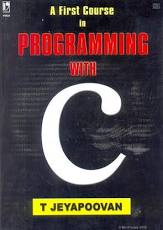

My FAVORITE BOOKS
2 States: by Chetan Bhagat

2 States: The Story of Author's Marriage commonly known as 2 States is a 2009 novel written by Chetan Bhagat. It is the story about a couple coming from two different states in India, who face hardships in convincing their parents to approve of their marriage. Bhagat wrote this novel after quitting his job as an investment banker. Read more..
Half Girlfriend: by Chetan Bhagat

Half Girlfriend is an Indian English coming of age, young adult romance novel by Indian author Chetan Bhagat. The novel, set in rural Bihar, New Delhi, Patna, and New York, is the story of a Bihari boy in quest of winning over the girl he loves. This is Bhagat's sixth novel which was released on 1 October 2014 by Rupa Publications. The novel has also been published in Hindi and Gujarati. Read more..
Programming With c: by T JEYAPOOVAN

C is a popular programming language which is commonly used by scientists and engineers to write programs for any specific application. C is also a widely accepted programming language in the software industries. This beginner's guide to computer programming is for student programmers to effectively write programs for solving numerical problems. All that is required of a beginner programmer is not experience in computing but interest in computing.
Data Structure Using C: by Reema Thareja

Data Structures Using C has been developed to provide a comprehensive and consistent coverage of both the abstract concepts of data structures as well as the implementation of these concepts using C language. It begins with a thorough overview of the concepts of C programming followed by introduction of different data structures and methods to analyse the complexity of different algorithms. It then connects these concepts and applies them to the study of various data structures such as arrays, strings, linked lists, stacks, queues, trees, heaps, and graphs.
Frankenstein: by Mary Shelley
Frankenstein tells the story of Victor Frankenstein, a young scientist who creates a sapient creature in an unorthodox scientific experiment. Shelley started writing the story when she was 18, and the first edition was published anonymously in London on 1 January 1818, when she was 20. Her name first appeared in the second edition, which was published in Paris in 1821.
Read more..